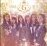

곡설명

여자친구 3rd Mini Album [SNOWFLAKE]
여자친구 학교시리즈 완결편 "시간을 달려서"
2015년 최고의 신인에서 2016년 최고 기대주로- 차근차근 성장하고 있는 여섯 소녀들, 여자친구가 세 번째 미니앨범 [SNOWFLAKE]를 발표하며 컴백했다. 순수한 눈의 결정- 눈꽃, 눈송이를 뜻하는 앨범 타이틀 [SNOWFLAKE]는 여자친구가 가진 아이덴티티를 표현한 단어로 약하지만 빛나고, 추운 곳에서도 아름다운 눈꽃처럼, 빛나는 음악으로 멋지게 성장해 나가길 바라는 마음을 담았다.